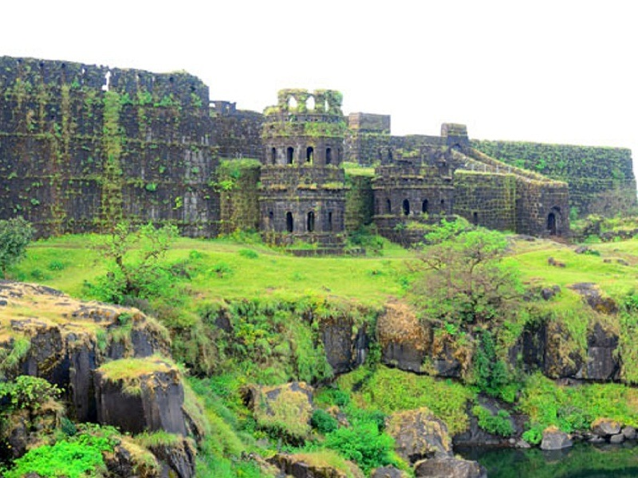
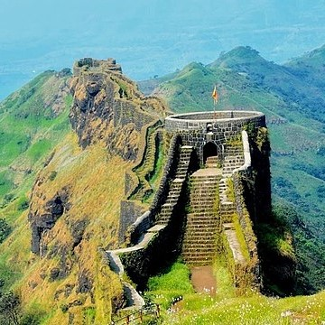
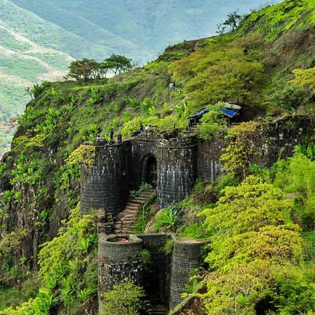
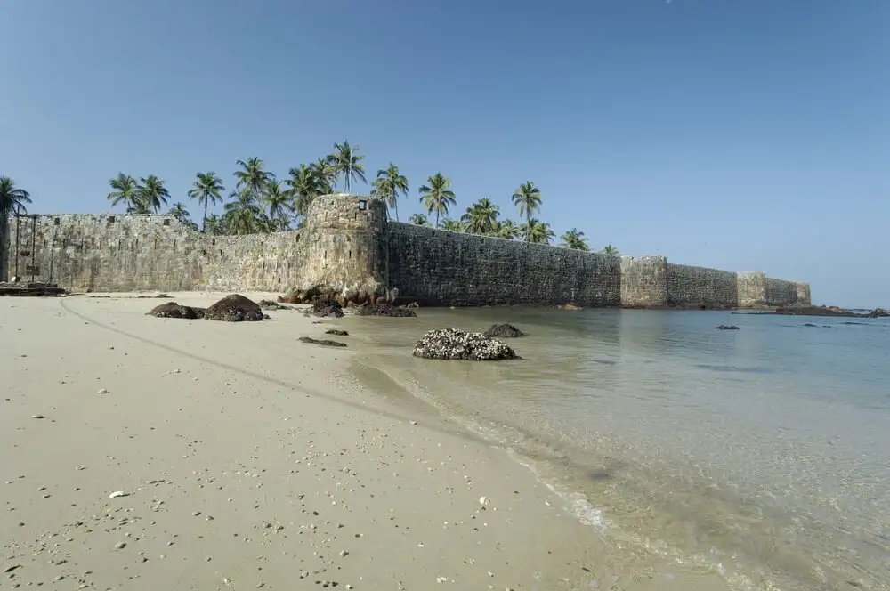
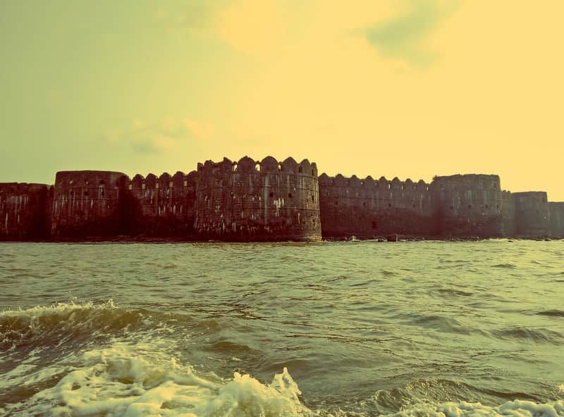
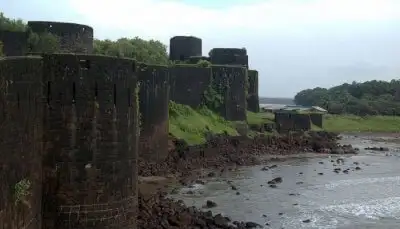
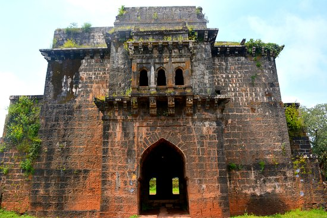
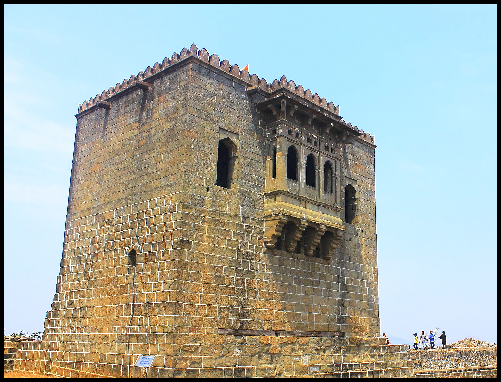

<link href="https://cdn.jsdelivr.net/npm/bootstrap@5.3.0-alpha2/dist/css/bootstrap.min.css" rel="stylesheet" integrity="sha384-aFq/bzH65dt+w6FI2ooMVUpc+21e0SRygnTpmBvdBgSdnuTN7QbdgL+OapgHtvPp" crossorigin="anonymous">
<link rel="stylesheet" type="text/css" href="gallary.css">
<header>
    <nav>
        <div class="logo"> <h1 style="font-size: 50px; font-weight: bold;"> दुर्गभ्रमंती </h1> </div>
        <div class="menu">
            <a href="/home.html">Home</a>
            <a href="/gallary.html" style="color: black;">Gallery</a>
            <a href="/about.html">About</a>
            <a href="/contact.html">Contact</a>
        </div>
    </nav>

 <main>

    <div class="card-container">
        <div class="card">
            
            <div class="card-content">
                <h3>Raigad</h3>
                <p>Raigad is a hill fort situated in Mahad, Raigad district of Maharashtra, India. In order to describe its forest density, it is written in Bakhar (historical narratives) that, “In Jawali forest, sunlight was also not ever touched to land”. It is one of the strongest fortresses on the Deccan Plateau. It was previously known as Rairee or Rairy fort.
                 Many constructions and structures on Raigad were built by Chhatrapati Shivaji and the Chief Engineer was Hiroji Indulkar. Chhatrapati Shivaji made it his capital in 1674 upon being crowned the king of the Maratha kingdom, which later developed into the Maratha Empire, eventually covering much of western and central India. The fort has a famous places
                 named "Hirakani Buruj", "Jagdishwar temple", "Meghdambari" and many more.
                <a href="https://en.wikipedia.org/wiki/Raigad_Fort">Read More</a></p>
            </div>
        </div>

        <div class="card">
            
            <div class="card-content">
              <h3>Rajgad</h3>
              <p>Rajgad (literal meaning Ruling Fort) is a Hill region fort situated in the Pune district of Maharashtra, India. Formerly known as Murumbdev, the fort was the first capital of the Maratha Empire under the rule of Chhatrapati Shivaji for almost 26 years, after which the capital was moved to the Raigad Fort.
               Treasures discovered from an adjacent fort called Torna were used to completely build and fortify the Rajgad Fort.
             The Rajgad Fort is located around 60 km (37 mi) to the south-west of Pune and about 15 km (9.3 mi) west of Nasrapur in the Sahyadris range. The fort is a significant tourist destination and is most sought after especially during monsoon. Visitors prefer to stay overnight on the fort considering the fort itself is huge and cannot be explored in a single day.
             <br><a href="https://en.wikipedia.org/wiki/Rajgad_Fort">Read More</a></p>
                    
            </div>
        </div>

        <div class="card">
            
            <div class="card-content">
              <h3>sinhagad</h3>
              <p>Sinhagad Fort, also known as the Lion's Fort, is a historic fortress near Pune, Maharashtra, India. It played a significant role in the Maratha Empire's history.
                Fort is a renowned historical stronghold that holds immense cultural and architectural significance. Its origins date back to the 14th century, and it gained prominence during the reign of Chhatrapati Shivaji Maharaj. 
                The fort's strategic location atop a hill provides breathtaking views of the surrounding landscapes. 
                Sinhagad Fort stands as a testament to the valor and bravery of the Maratha warriors, who defended it against various invasions. Today, it stands as a popular tourist destination, offering visitors a glimpse into Maharashtra's glorious past and a chance to explore its well-preserved structures and remarkable natural beauty.
                <br><a href="https://en.wikipedia.org/wiki/Sinhagad_Fort">Read More</a></p>
            </div>
        </div>

        <div class="card">
            
            <div class="card-content">
              <h3>Ajinkyatara</h3>
              <p>Ajinkyatara (literally "The Impregnable Star") is a fort on one of the seven mountains surrounding the city of Satara in the Sahayadri Mountains of Maharashtra, India. It is a 16th-century fort, that was called "Ajimtara", during Aurangzeb regime and was based on Aurangzeb son's name, Ajim. Maharani tarabai capturev and renamed Ajinkyatara.", when he wrote his first novel on the same name, first published in 1909. 
                Now it also holds the television tower for the city of Satara. This fort has been the place where several pivotal moments in Maratha history took place.
                The fort is located at Ajinkyatara Mountain, which is 3,300 feet high. Access to Ajinkyatara is possible by road (2 hours from Pune, 4 hours from Mumbai), train (the nearest station is Satara Road) or plane (nearest airport is Pune).
                <br> <a href="https://en.wikipedia.org/wiki/Ajinkyatara">Read More</a></p>
            </div>
        </div>

        <div class="card">
            
            <div class="card-content">
              <h3>Sindhudurg</h3>
              <p>Sindhudurg Fort is situated on a rocky island in the Arabian Sea and is known for its impressive marine engineering. Sindhudurg Fort, located in Malvan, Sindhudurg district of Maharashtra, India, is a historic sea fort built by Chhatrapati Shivaji. It was constructed to protect the Maratha kingdom from invasions and enemy attacks. 
                The fort is renowned for its strategic architecture, including its strong walls and bastions. It houses notable structures like the Durga Devi temple, the Hanuman temple, and a hidden passage called the Devdutt.
                 Sindhudurg Fort stands as a testament to the rich history and architectural prowess of the Maratha Empire. The fort also features a unique feature called the "Ghode Bazaar," a horse-shaped structure that was used for training cavalry. It served as a center for horse trading and played a crucial role in the military operations of the Marathas.                            <br> <a href="https://en.wikipedia.org/wiki/Sindhudurg_Fort">Read More</a></p>
            </div>
        </div>

        <div class="card">
            
            <div class="card-content">
              <h3>Murud Janjira</h3>
              <p>Murud-Janjira Fort is situated on an island off the coastal village of Murud in the Raigad district of Maharashtra, India. It is a renowned sea fort known for its impressive architecture and strategic location. Built in the 15th century, Murud-Janjira Fort served as a stronghold for the Siddis, an Abyssinian dynasty.
                The fort was constructed to safeguard the region from invasions and pirate attacks. Its strong walls and bastions exhibit remarkable craftsmanship, with intricate carvings and beautiful arches. Notable structures within the fort include the palace, mosque, and several freshwater tanks. 
                One unique feature of Murud-Janjira Fort is its impregnable nature, with no successful attempts to conquer it throughout history. The fort's hidden entrances and complex defense mechanisms made it an unconquerable fortress. It offers breathtaking views of the Arabian Sea and surrounding landscapes.                <br> <a href="https://en.wikipedia.org/wiki/Murud-Janjira">Read More</a></p>
            </div>
        </div>

        <div class="card">
            
            <div class="card-content">
              <h3>Prachandgad</h3>
              <p>Prachandgad Fort, also known as Prachandagad or Torna(at time of Shivaji Maharaj), This is first fort in Maratha empire aquired by Shivaji raje. Fort is a historic hill fort located in the Pune district of Maharashtra, India. Perched atop the Sahyadri mountain range, the fort offers panoramic views of the surrounding valleys and picturesque landscapes.
                Built during the reign of the Maratha Empire, Prachandgad Fort served as a strategic defense post and played a crucial role in protecting the region from enemy invasions. The fort's architecture showcases the military prowess of the Marathas, with sturdy walls, bastions, and fortified gates.                
                Prachandgad Fort is renowned for its natural beauty and trekking opportunities. It attracts adventure enthusiasts and nature lovers who enjoy exploring its rugged terrain and scenic trails. The trek to the fort offers a thrilling experience, with rocky paths, dense forests, and breathtaking vistas along the way. 
                Prachandgad Fort stands as a testament to Maharashtra's rich heritage and offers a captivating blend of history.
                <br><a href="https://en.wikipedia.org/wiki/Torna_Fort">Read More</a></p>
            </div>
        </div>
      
        <div class="card">
            
            <div class="card-content">
              <h3>vijaydurg</h3>
              <p>Vijaydurg Fort, located in the Sindhudurg district of Maharashtra, India, is a significant historical landmark and a coastal fortress. Built during the 17th century, it stands proudly on a rocky promontory along the Arabian Sea. Vijaydurg, meaning "Victory Fort," was constructed by Chhatrapati Shivaji Maharaj, the founder of the Maratha Empire.
                The fort's strategic location made it a stronghold against enemy invasions and a vital center for maritime activities. Its robust fortifications, massive walls, and bastions reflect the military brilliance of the Marathas. Vijaydurg Fort is known for its extensive underground tunnels and escape routes, which served as effective defense mechanisms.                
                The fort houses several notable structures, including temples, a granary, a royal court, and residential quarters.                
                Surrounded by natural beauty, with the sea on one side and lush green hills on the other, Vijaydurg Fort offers a captivating setting. Exploring its expansive premises provides a glimpse into the glorious past of the Maratha Empire and the strategic importance of coastal forts in Indian history.
                <br><a href="https://en.wikipedia.org/wiki/Vijaydurg_Fort">Read More</a></p>
            </div>
        </div>          

        <div class="card">
            
            <div class="card-content">
              <h3>Lohagad</h3>
              <p>Lohagad Fort, situated in the Sahyadri mountain range of Maharashtra, India, is a captivating historical landmark. "Lohagad" translates to "Iron Fort," and it derives its name from the strong iron content in its rocky structure. This formidable fort has a rich history dating back to the 18th century and has witnessed the reign of various dynasties.
                Perched atop a hill, Lohagad Fort offers breathtaking panoramic views of the surrounding lush green landscapes and picturesque valleys. It served as a strategic outpost for many rulers, including the Marathas and the Mughals, due to its vantage point and strong fortifications.                
                The fort's architecture showcases the ingenuity of its builders, with massive walls, gateways, and intricate water systems. Visitors can explore various structures within the fort, such as the Vinchu Kata (Scorpion's Sting), a prominent feature that offers stunning views.
                Trekking to Lohagad Fort is a popular activity, attracting adventure enthusiasts and nature lovers alike. 
                <br><a href="https://en.wikipedia.org/wiki/Lohagad">Read More</a></p>
            </div>
        </div>

        <div class="card">
            
            <div class="card-content">
              <h3>Panhala</h3>
              <p>Panhala Fort is a historic fort located in Panhala, Kolhapur district of Maharashtra, India. It is perched on a hill and offers panoramic views of the surrounding landscapes. The fort has a rich history and served as a strategic outpost during various periods. It is known for its impressive architecture and structures such as the Teen Darwaza, Sajja Kothi, and Ambarkhana.
                   Panhala Fort is a popular tourist destination attracting visitors with its historical significance and scenic beauty.
              With its strategic location and captivating structures, Panhala Fort provides a glimpse into the glorious past of the Maratha Empire. Exploring the fort allows visitors to immerse themselves in the history and marvel at the architectural marvels that have withstood the test of time.
              <br><a href="https://en.wikipedia.org/wiki/Panhala_Fort">Read More</a></p>
            </div>
          </div>

          <div class="card">
            
            <div class="card-content">
              <h3>Vishalgad</h3>
              <p>Vishalgad Fort is a historic fort located in Kolhapur district of Maharashtra, India. Situated on a hill, it offers breathtaking panoramic views of the surrounding landscapes. The fort served as a strategic outpost and played a significant role in the Maratha Empire. It is known for its impressive architecture and structures such as the Takmak Tok, Nageshwar Temple, and Dindi Darwaja.
          
              Vishalgad Fort attracts tourists with its historical significance and scenic beauty. Exploring the fort allows visitors to delve into the glorious past of the Marathas and appreciate the architectural marvels that have stood the test of time.
          
              <br><a href="https://en.wikipedia.org/wiki/Vishalgad">Read More</a></p>
            </div>
          </div>
          
          <div class="card">
            
            <div class="card-content">
              <h3>Shivneri</h3>
              <p>Shivneri Fort is a historic fort located near Junnar in Pune district of Maharashtra, India. It holds immense historical significance as it is the birthplace of Chhatrapati Shivaji Maharaj, the founder of the Maratha Empire. The fort boasts impressive architecture and features such as the Kadelot Point, Shivai Temple, and the birthplace monument.
          
              Shivneri Fort is a popular tourist attraction, allowing visitors to explore the birthplace of one of India's greatest warriors and learn about his life and legacy.
          
              <br><a href="https://en.wikipedia.org/wiki/Shivneri_Fort">Read More</a></p>
            </div>
          </div>
          

    </div>


 </main>

</header>